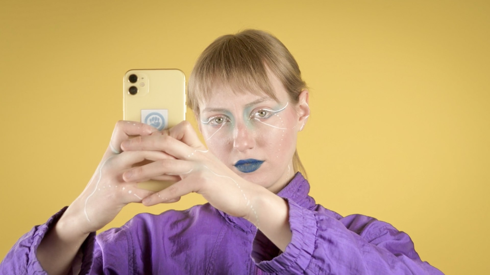
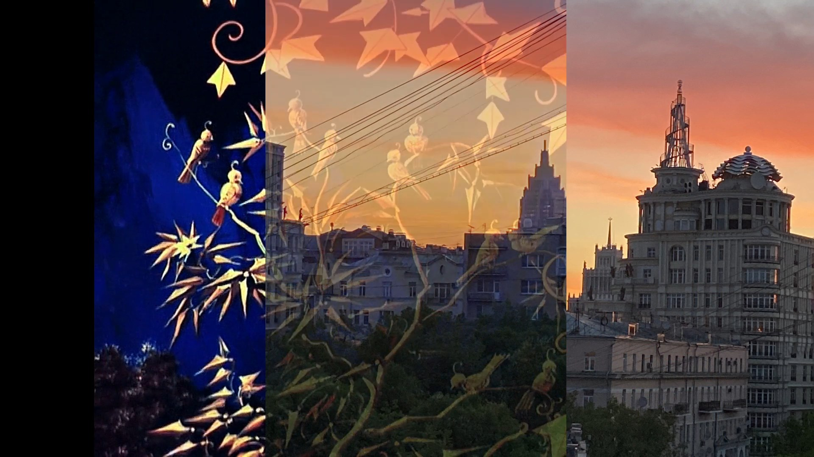
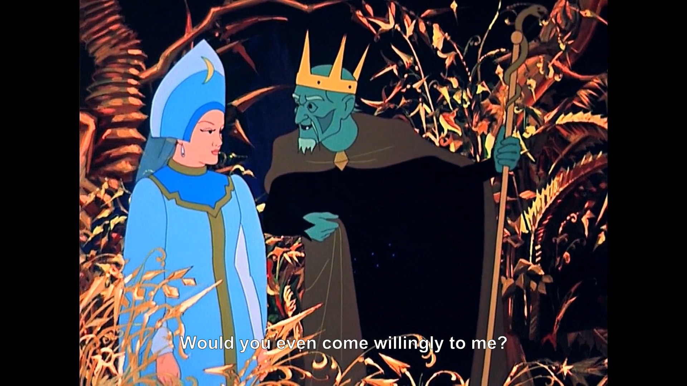
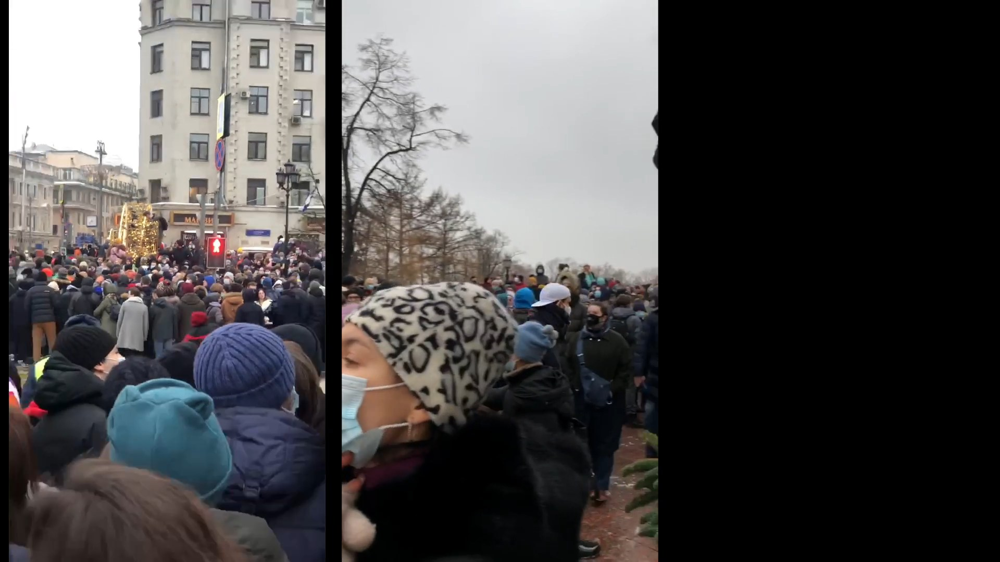
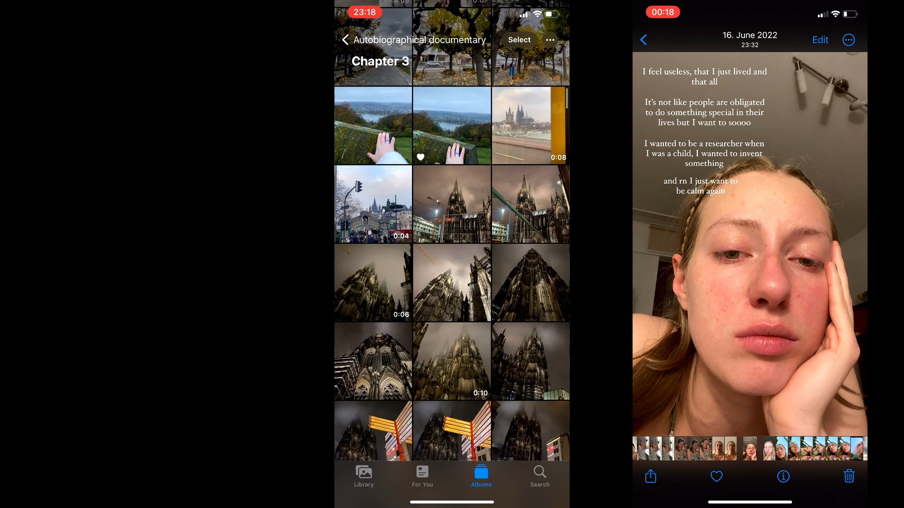

Anastasiia
2024 · Single-channel video
Anastasiia is a single-channel video by Nickii Schamborski, 2024. Shown at Matara Festival for the Arts (2024).





About the work
'Anastasiia' is an auto-fictional short film telling the story of a young individual of Ukrainian-Russian descent who navigates migration across wars and politically unstable regions in Siberia, Crimea, Moscow, and Germany. Through social-media style video-logs and cellphone footage, the work shares the protagonist's experience with various forms of sexual and political objectification, culminating in their assertion of agency and self-empowerment. Created in collaboration with Anastasiia Zakharova, the work challenges viewers' notions of authenticity and authorship of digital content, as scripted dialogs and staged moments stand in for what cannot be documented.
Zur Arbeit
'Anastasiia' ist ein auto fiktionaler Kurzfilm, der das Leben eines jungen Menschen ukrainisch-russischer Herkunft beleuchtet, der sich durch Kriege und politisch instabile Regionen in Sibirien, der Krim, Moskau und Deutschland bewegt. Anhand von Videoprotokollen und Handyaufnahmen im Social-Media-Stil erzählt das Werk von den Erfahrungen dieses Menschen, der verschiedenen Formen sexueller und politischer Objektivierung ausgesetzt wurde, und gipfelt in der Behauptung seiner Handlungsfähigkeit und Selbstermächtigung. Die in Zusammenarbeit mit Anastasiia Zakharova entstandene Arbeit stellt unser Konzept von Authentizität und der Urheberschaft digitaler Inhalte in Frage; gescriptete Dialoge und inszenierte Momente stehen hier für das, was sich nicht dokumentieren lässt.
Details
- Year
- 2024
- Type
- Single-channel video
- Specs
- 4K, stereo sound, 16:31 min
- Institution / place
- Collaboration with Anastasiia Zakharova
- Collaborators
- Anastasiia Zakharova (Co-creator)
- Direction
- Nickii Schamborski & Anastasiia Zakharova
- Camera
- Nickii Schamborski & Anastasiia Zakharova
- Editing
- Nickii Schamborski & Anastasiia Zakharova
Shown at
- Matara Festival for the Arts, University of Ruhuna, Sri Lanka (2024)